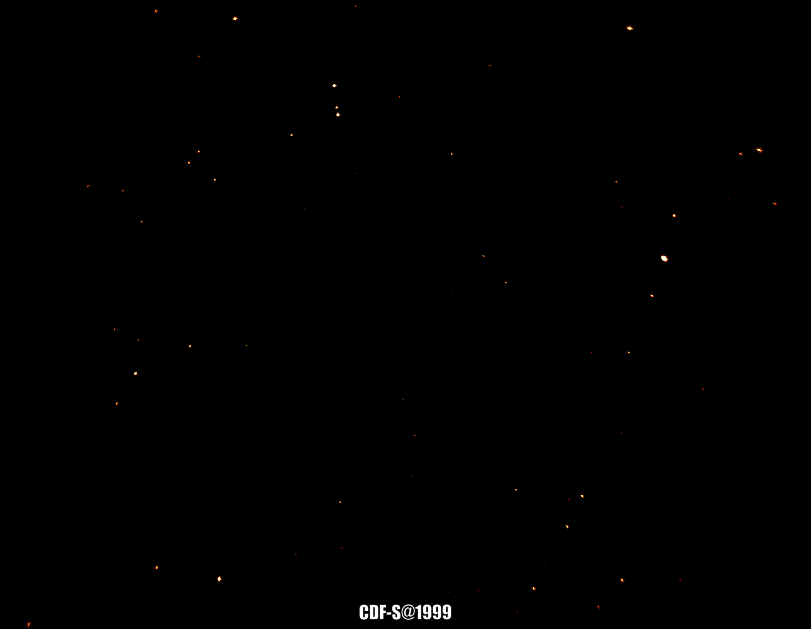

Active Galactic Nucleus (AGN), powered by a supermassive black hole, is a type of astronomical objects. There are many many of them in the sky. For example, for any patch of sky equaling the area of full Moon, you can find > 2000 AGNs. AGNs often emit X-rays (yes, the rays doctors use to see your bone), and the X-ray emission is not constant over time (yes, AGN twinkles like stars). Astronomers have built a giant X-ray telescope satellite, Chandra, to study AGNs. With the help of Chandra, astronomers can characterize AGNs with great details. Our group (led by Prof. Niel Brandt) is doing an awesome project called Chandra Deep Field-South (CDF-S) survey. We use Chandra to observe a small patch of sky over 100 times totaling exposure time of 7 million seconds! The observations started from 1999 and ended in 2016, spanning 17 years. The great data give us an opportunity to characterize long-term X-ray variability (twinkle) of AGNs. The movies below show the pictures taken by Chandra at different time. Note that AGNs really twinkle. We have conducted a variability study based on CDF-S data, and published our results in The Astrophysical Journal (http://adsabs.harvard.edu/cgi-bin/bib_query?arXiv:1608.08224).
